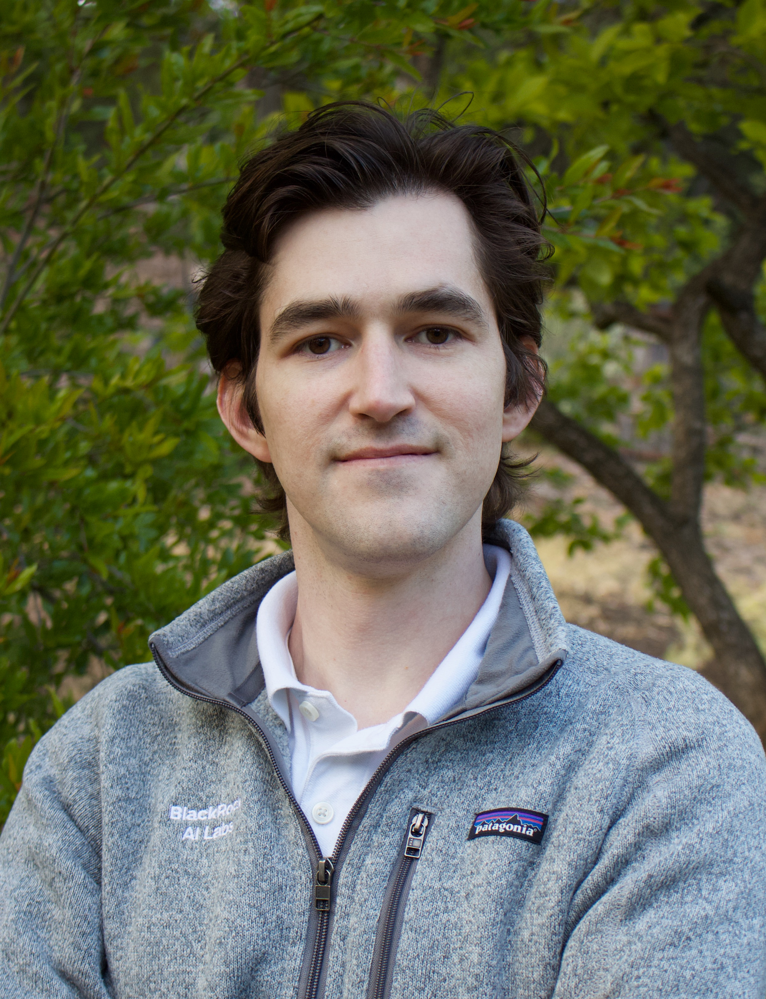

|  | Nicholas Moehle ()
Resume (pdf) |
Ph.D., Mechanical Engineering,
Stanford University, 2018.
Advisor: Stephen Boyd
M.S., Electrical Engineering, Stanford University, 2014
B.S., Mechanical Engineering, University of California, Berkeley, 2010
My PhD research involved applying control theory and optimization to energy management. I now have a research role at a large finance company (BlackRock), and I hope to post some of my more recent work here soon.
Energy management:
Dynamic Energy Management. N. Moehle, E. Busseti, S. Boyd, M. Wytock. Chapter 4 in Large Scale Optimization in Supply Chains and Smart Manufacturing, 2019.
Value Function Approximation for Direct Control of Switched Power Converters. N. Moehle, S. Boyd. Conf. on Industrial Electronics and Applications, 2017.
Dynamic Energy Management with Scenario-Based Robust MPC. M. Wytock, N. Moehle, S. Boyd. American Control Conf, 2017.
Maximum Torque-per-Current Control of Induction Motors via Semidefinite Programming. N. Moehle, S. Boyd. Proceedings of the Conference on Decision and Control, 2016.
Optimal Current Waveforms for Switched-Reluctance Motors. N. Moehle, S. Boyd. Proceedings of the Multi-Conference on Systems and Control, 2016.
Optimal Current Waveforms for Brushless Permanent Magnet Motors. N. Moehle, S. Boyd. International Journal of Control, 2015.
Applied optimization:
A Distributed Method for Optimal Capacity Reservation. N. Moehle, X. Shen, Z.-Q. Luo, S. Boyd. Journal of Optimization Theory and Applications, 2019.
A Simple, Effective Heuristic for Embedded Mixed-Integer Quadratic Programming. R. Takapoui, N. Moehle, S. Boyd. International Journal of Control, 2017.
Embedded Code Generation Using the OSQP Solver. G. Banjac, B. Stellato, N. Moehle, P. Goulard, A. Bemporad, S. Boyd. Proceedings of the Conference on Decision and Control, 2017.
A Simple Effective Heuristic for Embedded Mixed-Integer Quadratic Programming. R. Takapoui, N. Moehle, S. Boyd, A. Bemporad. Proceedings of the American Control Conference, 2016.
A Perspective-Based Convex Relaxation for Switched-Affine Optimal Control. N. Moehle, S. Boyd. Systems and Control Letters, 2015.
Covariance Estimation in Two-Level Regression. N. Moehle, D. Gorinevsky. Proceedings of SysTol 2013, 2013.
Principal instructor for:
Convex Optimization I (EE364A), Summer 2016
Teaching assistant for:
Stochastic Control (short course), Winter 2017
Convex Optimization II (EE364B), Spring 2014
Convex Optimization I (EE364A), Winter 2014
Introduction to Linear Dynamical Systems (EE263), Autumn 2013
Introduction to Optimal Control Theory (AA203), Spring 2013
Feedback Control Design (ENGR105), Winter 2013